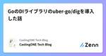
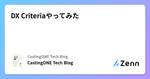
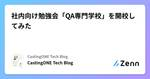

CastingONE Tech Blogのフィード
https://zenn.dev/p/castingone_dev
CastingONE Tech Blogの投稿一覧
フィード

GoのDIライブラリのuber-go/digを導入した話 1
1
CastingONE Tech Blogのフィード
はじめにCastingONEでバックエンドエンジニアをやっている永田と申します。本日は、最近導入したDIライブラリのuber-go/digについてお話ししようと思います。 DIライブラリを導入する動機CastingONEのバックエンドでは、Dependency Injection自体はすでに導入されていたのですが、実装上以下の問題がありました。多くの依存関係を持つ構造体の初期化のコードが冗長になる。構造体に依存関係を追加したときに、利用側で構造体を初期化するコードを修正し忘れる。一点目はそのままですが、二点目について補足をします。例えば、以下のようなUserUse...
1日前

DX Criteriaやってみた 1
CastingONE Tech Blogのフィード
はじめにこんにちは、CastingONE岡崎です。CastingONEでは、開発チームやプロダクトの規模が大きくなってきたこともあり生産性の可視化や向上に力を入れています。その一環として今回はCastingONEとしては初のDX Criteriaをやってみたのでどういう結果になったかを簡単にご紹介したいと思います。 DX CriteriaとはDX Criteriaとは日本CTO協会が策定している、2つのDX(Degital TransformationとDeveloper eXperience)を企業が推進するための評価基準です。チーム、システム、データ駆動、デザイン思...
8日前

社内向け勉強会「QA専門学校」を開校してみた 1
CastingONE Tech Blogのフィード
初めに初めまして。CastingONEでQAエンジニアをやっている松本と申します。今回は社内で行った勉強会「QA専門学校」について紹介してみようと思います。 なぜ開催しようと思ったのか理由としては大きく2つあります。1つ目はQAエンジニアのスキルの底上げのためです。QAエンジニア歴や現状での知識量に差があるように思え、2つ目はQAエンジニア以外にも品質に目を向けてもらいたかったためです。当然ですが品質はQAエンジニアだけであげられるものではありません。プロダクトに関わる全員の協力があって初めて品質向上が成し遂げられるものだと考えています。開発者にも少しでも品質に興味...
13日前

成長期のスタートアップにおける、デザインシステムの考え方
CastingONE Tech Blogのフィード
こんにちは。派遣業界のSaaS企業でUX/UIデザイナーをしている水田と申します。この記事では、初期からデザイナー不在でデザイン負債が蓄積したプロダクトに対して、一人目のデザイナーとしてどのようにしてデザインの整理を試み、やがてデザインシステムを構築・運用していくことになったのか、その過程で私が学んだことをまとめてみました。デザインシステムを作りはじめたいけど、どこから手をつければ良いか悩んでいる方。今まさにチームでデザインシステムの構築を検討している方。デザインシステムを運用しているものの、効果を十分に実感できていない方。このような方々に読んで頂けると、少しお役立ちできるか...
15日前
MySQLからPostgreSQLへ 〜移行の全貌解説〜
CastingONE Tech Blogのフィード
はじめにこんにちは！株式会社CastingONEでHR領域のSaaS開発を行っている@hiroakiです。最近サウナの聖地と言われている『サウナ しきじ』に行ってきました！聖地と言われるだけあって、クオリティは高く良い体験ができました。特に薬草サウナは最高でしたね！さて、今回はCastingONEのデータベースについて、MySQLからPostgreSQLに移行した話を書いていきます。この記事では、その移行プロセスの背景、実施方法や躓くポイント等をまとめています。データベースの移行を検討している方の参考になれば幸いです！ 移行背景CastingONEはアプリケーションの...
20日前
良書『Go言語 100Tips』を読んでの学び ~サンプルコードを添えて~
CastingONE Tech Blogのフィード
はじめに株式会社CastingONEでバックエンドエンジニアをしている しんのすけ と申します。「Go言語 100Tips」という本を読んで学んだことの一部をtech blogに残したいと思います。 なぜこの本を読むことになったのか「Go言語 100Tips」はかなり勉強になる本であるということでお薦めされ、読んでみようかということで購入をしました。また弊社では、頻繁に読書会を開催しており、幸運にも購入したタイミングと読書会のタイミングが重なったため、読書会で他のエンジニアの方と感想を共有することしながら読み進めることができ様々な視点から学びを得ることができました。 ...
1ヶ月前
Modular Monolith 化
CastingONE Tech Blogのフィード
はじめにCastingONE でバックエンドエンジニアをやっている城崎です。この記事では CastingONE の一部のコードを Modular Monolith へ移行した話を取り扱います。CastingONE では複数のサービスを一つのリポジトリ(モノレポ)で管理しています。しかし、複数のサービスに全く同じコードが存在している状態であり、複数のファイルに同じ修正をすることがありました。この状態を解消し、メンテナンスしやすくするために、共通する機能をモジュール化することにしました。 今回は扱わない話モノレポについてマイクロサービスについてレイヤードアーキテクチ...
1ヶ月前
エンジニアLessチームでTeam Buildingして、チーム力を高める！
CastingONE Tech Blogのフィード
はじめにこんにちは！うちの会社はアジャイルなチーム開発のために LeSS(Large Scale Scrum) を採用しているのですが、ちょうど昨年末に Less チームが 2→3 チームに増えました 🎉詳しくは以下の記事にありますが、どんどん人が増えて活気づいてて良い感じです。https://zenn.dev/castingone_dev/articles/less_at_castingoneチームが増えるにあたりメンバーも変わるということで、各チームで良い感じにスタートダッシュが切れるよう、それぞれチームビルディング会を行いました！特に会社で決めたわけではないのですが、...
1ヶ月前
CastingONEにおけるWebアクセシビリティ向上ことはじめ
CastingONE Tech Blogのフィード
はじめに株式会社CastingONE でフロントエンドエンジニアをしている山下です。最近は しんぱち食堂 にハマっています。弊社では昨年から Web アクセシビリティ向上、浸透に関する取り組みを行ってきており、今回はその取り組みに関して紹介していきたいと思います。組織や個人でアクセシビリティを向上したいけど何から始めたらいいかわからないといった方の参考になれば幸いです。 きっかけ近年のアクセシビリティの盛り上がり、アクセシビリティに関するイベントや技術本の出版などが増えてきたことからメンバー各々が興味を持ってキャッチアップは行っていました。そんな中、以下の理由をきっか...
1ヶ月前
CastingONEアドベントカレンダー2023やりました
CastingONE Tech Blogのフィード
株式会社CastingONEでソフトウェアエンジニアをしている @takashabe です。普段はHR領域のSaaSをGoで書いています。このpublicationでも何度か上げさせてもらいましたが、今年は会社でアドベントカレンダーをやったので、その紹介をしたいと思います。https://qiita.com/advent-calendar/2023/casting-one アドベントカレンダーとはそもそもアドベントカレンダー is 何、という方も多いと思うので簡単に紹介します。本来のアドベントカレンダーは12月1日から24日までお菓子などを毎日の楽しみとして開けていくカレンダ...
3ヶ月前
CastingONE開発振り返り2023
CastingONE Tech Blogのフィード
はじめにこんにちは、CastingoONE岡崎です。年の瀬ということで、今年もCastingONEの開発チームの1年を振り返ってみようと思います。 プロダクトまず今年のCastingONEは2020/11にリリースしたv2.0.0から約3年ぶりのメジャーアップデートであるv3.0.0をリリースし、プロダクトとして更に大きな価値を作っていく節目となる年にもなりました。 これまでv2の開発では主に採用CRMの機能として顧客の持っている求人や求職者のデータをより簡単に取り込んでもらったり網羅的に管理しやすくする機能、MA機能の一貫として配信機能の強化などに注力して開発を行ってき...
3ヶ月前
Goのバージョン1.21以降はライブラリとのバージョン差によるバグが減るらしい
CastingONE Tech Blogのフィード
これは CastingONE Advent Calendar 25日目の記事です。 はじめにCastingONEでバックエンドエンジニアをやっている清水です。本記事では、Go 1.21のリリースに伴い加わったツールチェーンの新機能により前方互換性が向上したようなので、その内容について説明していきます。少しイメージがしにくい場合は、手を動かして挙動を確認できるように検証用のコードを用意したのでご確認いただければと思います。 リリースによって追加されたのはどのような機能か？Go 1.21のリリースによって追加されたツールチェーンの機能は、Goのコードの前方互換性を向上させるも...
3ヶ月前
useInfiniteQueryで簡単に無限スクロールを実装する
CastingONE Tech Blogのフィード
CastingONE Advent Calendar 2023 23 日目の記事です！ はじめにこんにちは、CastingONE開発部です。本日は、使ってみて非常に便利だった useInfiniteQuery について紹介したいと思います！useInfiniteQuery は Tanstack Query が提供してる機能の一つで、「無限スクロール」を簡単に実装することができます。 無限スクロール無限スクロールとは、一般的なUIによくあるパターンのことで、追加で読み込める情報がある場合に、スクロールイベント、あるいは追加読み込みボタンのクリックイベントによって、追加データ...
3ヶ月前
Cloud Runでログとトレースを紐づけてObservabilityを高める
CastingONE Tech Blogのフィード
これは GCP Advent Calendar 2023 および CastingONE Advent Calendar 2023 22日目の記事です。 はじめに株式会社CastingONEでソフトウェアエンジニアをしている @takashabe です。普段はHR領域のSaaSをGoで書いています。弊社ではアプリケーション実行基盤としてGoogle CloudのCloud Runを全面的に採用しています。マネージドを利用することで、非常に充実したインフラ運用周りのサポートが得られ、アプリケーション開発に注力することができています。一方、アプリケーションの稼働状況が分かるようなログ...
3ヶ月前
CastingONEのLeSS(Large Scale Scrum)運用について
CastingONE Tech Blogのフィード
これは CastingONE Advent Calendar 2023 15日目の記事です。 はじめにCastingONEでは、2023年の11月よりプロダクト開発チームを2チームに分割しLeSS(Large Scale Scrum)のフレームワークを使って開発してきましたが、この度12月よりめでたく3チーム体制にスケールさせました。LeSS運用からちょうどほぼ大体1年という時期でもあるので今回は弊社のLeSS運用方法や運用してみての所感について紹介したいと思います。 LeSS(Large Scale Scrum)概要LeSSはその名の通り、基本的には通常のスクラムです。...
3ヶ月前
dnd KitのSortableとReact Hook Formを使ってソート可能なフォームを作る
CastingONE Tech Blogのフィード
これは CastingONE Advent Calendar 2023 20 日目の記事です。こんにちは！株式会社 CastingONEで働いている岡本です。 はじめにこちらの記事で、dnd kit のSortable機能を使用してアイテムの並び替えを行う方法について解説しました。今回はその応用編で、React Hook Formを絡ませてテキストフィールドのソート可能かつフィールドを増減可能なフォームを作成する手順について解説していきます。また、React Hook Form の使い方はこちらの記事で解説しておりますので、よろしければそちらもご覧ください！https://ze...
3ヶ月前
DBアクセスがあるユニットテストをトランザクションを使って倍速にした
CastingONE Tech Blogのフィード
これは CastingONE Advent Calendar 2023 21日目の記事です。株式会社CastingONEでバックエンドエンジニアをしている村上です。弊社システムのDBをMySQLからPostgreSQLに移行した際、以前は数分で終わっていたCIがゆうに10分を超えるようになりました。実行時間の大部分はDBアクセスを伴うユニットテストで、テストの書き方を見直すことで劇的に時間短縮することができました。備忘録としてその方法をまとめます。 Before: テストケースごとにレコードをDELETE & INSERT各テストの最初にDBの既存レコードをDELETE...
3ヶ月前
Reactドラッグ&ドロップライブラリ、dnd kitのプリセット、sortableの使い方をユースケースから理解する
CastingONE Tech Blogのフィード
これは CastingONE Advent Calendar 2023 19 日目の記事です。こんにちは！株式会社 CastingONEでフロントエンドエンジニアとして働いている岡本です。 はじめにhttps://zenn.dev/castingone_dev/articles/dndkit20231031こちらの記事で、dnd kit でドラッグ＆ドロップの使い方について執筆したのですが、dnd kit にはプリセットで並び替えが簡単に実装できるSortableが提供されています。このSortableの機能も弊社のアプリケーションで使用するので、社内で勉強会を実施し、どのよう...
3ヶ月前
context.Contextを自動挿入する静的解析ツール ctxfmt を書いた
CastingONE Tech Blogのフィード
これは Go言語 Advent Calendar 2023 15日目の記事です。 はじめに株式会社CastingONEでソフトウェアエンジニアをしている @takashabe です。普段はHR領域のSaaSをGoで書いています。みなさん context パッケージは活用されているでしょうか。多くのパッケージがそうであるように、現在新規に書かれる関数やメソッドは context.Context を受け取るような設計になっていることが大半かと思います。しかし太古に書かれたコードであったり、何らかの理由によりcontextを使っていないコードも存在し、それをメンテするときには自前でc...
3ヶ月前
TypeScriptにおいて型ガードとis演算子を利用して失った型を復活させるぞ！
CastingONE Tech Blogのフィード
CastingONE Advent Calendar 2023 14 日目の記事です！ はじめに表題の通りなんですが、TypeScript をやっていて、どーーーーしても型がanyやunknown、string|number|null|number[]みたいな意味わからないユニオン型になってしまうことはありませんか？ 型を指定したいっていうのはもちろんなので気をつけたいところではありますが、それでも自由な型が入ってきてしまう可能性がある場合の実装って困りませんか？私は困りました！先日業務をしていて、自由に入力できる入力項目を扱ったことがありました。その項目自体は、string で...
3ヶ月前